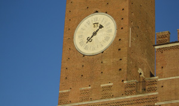

|

27 GIUGNO dalle ore 5,30 alle 7,30 ca. - 11 AGOSTO dalle 5,30 alle 8,00 ca. - Prove regolamentate mattutine di valutazione dei cavalli che vengono presentati alla Tratta (in passato dette "Prove di Notte").
28 GIUGNO dalle ore 5,30 alle 7,30 ca. - 12 AGOSTO dalle 5,30 alle 8,00 ca. - Prove regolamentate mattutine di valutazione dei cavalli che vengono presentati alla Tratta (in passato dette "Prove di Notte").
29 GIUGNO - 13 AGOSTO ore 7,00 - Presentazione dei cavalli che partecipano alle prove di selezione mattutine, dette "Batterie".
29 GIUGNO - 13 AGOSTO ore 9,00 ca. - Inizia la cosidetta "Tratta". È l'operazione con cui vengono abbinati i cavalli alle dieci Contrade che partecipano al Palio. I cavalli ritenuti idonei dallo staff dei Veterinari del Comune di Siena, vengono raggruppati in batterie e provati per tre giri intorno alla Piazza per verificare la loro adattabilità alla pista. Terminate le batterie i Capitani, alla presenza del Sindaco, si riuniscono per scegliere i dieci soggetti.
29 GIUGNO - 13 AGOSTO ore 12,00/13,00 - Su un palco allestito davanti al Palazzo Pubblico si svolgono le operazioni del sorteggio: ad ogni cavallo viene abbinata una Contrada. Ad ogni assegnazione, il Barbaresco prende in consegna il cavallo avuto in sorte e lo conduce alla stalla, accompagnato dai contradaioli.
29 GIUGNO ore 19,45 - 13 AGOSTO ore 19,15 - Prima prova delle sei che precedono il Palio. Attraverso queste corse si verificano le condizioni sia del cavallo che del fantino. Per ogni prova il cavallo è accompagnato dalla stalla della Contrada fino "all'Entrone" (ingresso del Palazzo Pubblico) da un folto gruppo di contradaioli, che intona i canti tradizionali. Per vedere le prove, occorre prender posto in Piazza o su un palco prima che sia fatto "pulito", cioè sia stata sgomberata la pista dai Vigili Urbani. Così per le altre prove.
Ogni contrada si è scelta un fantino che può cambiare a suo piacimento fino al mattino del Palio. Solo il cavallo non può essere cambiato. I cavalli entrano fra i due canapi nell’ordine nel quale sono esposte le bandiere alle finestre del Palazzo.
30 GIUGNO - 14 AGOSTO ore 9,00- Seconda prova. Ingresso al canape nell’ordine inverso della sera precedente. Lo sgombero della pista inizia alle 8,40.
30 GIUGNO ore 19,45 - 14 AGOSTO ore 19,15 - Terza prova. Ingresso al canape secondo l’ordine di estrazione avvenuto nell’assegnazione dei cavalli. Lo sgombero della pista inizia alle 19,15 a luglio e alle 18,45 ad agosto.
1° LUGLIO - 15 AGOSTO ore 9,00 - Quarta prova. Ingresso fra i canapi nell’ordine inverso della sera precedente. Lo sgombero della pista inizia alle 8,40.
1° LUGLIO ore 19,45 - 15 AGOSTO ore 19,15 - Prova generale. Ingresso fra i canapi secondo il numero che i cavalli avevano all’orecchio all’atto del sorteggio. Il primo scoppio del mortaretto ci sarà alle 18.45 (agosto 18.30), l’inizio dello sgombero alle 19.15 (agosto 19.00), l’uscita dal Cortile del Podestà alle 19.45 (agosto 19.30). Prima della prova, la tradizionale "carica" dei Carabinieri a cavallo, in ricordo della carica di Pastrengo del 1848. Lo sgombero della pista inizia alle 19,15 a luglio e alle 18,45 ad agosto.
1° LUGLIO - 15 AGOSTO ore 20,30 ca. - Cena della Prova Generale. In tutti i rioni delle Contrade partecipanti al Palio, dirigenti, contradaioli, ospiti e anche turisti si riuniscono a cena in onore dei protagonisti della giostra. Al tavolo d’onore con i maggiorenti della Contrada è il fantino. Canti, discorsi ed auspici per il successo della propria Contrada.
Dopo la cena il Capitano e i "Mangini" di ogni Contrada si incontrano con i dirigenti delle Contrade amiche ed alleate per stringere accordi a favorire la propria vittoria o quella della Contrada amica od ostacolare quella dell’avversaria: tutto sulla parola.
2 LUGLIO - 16 AGOSTO ore 7,45 - Nella Cappella adiacente al Palazzo Comunale, viene celebrata dall'Arcivescovo la "Messa del Fantino".
2 LUGLIO - 16 AGOSTO ore 9,00 - Provaccia: è così chiamata per il disinteresse delle Contrade ad impegnare il cavallo, per non stancarlo. L'ordine dell'ingresso fra i canapi è l'inverso di quello della Prova Generale. Dopo questa prova, Capitani e fantini si riuniscono in Comune per l'iscrizione del fantino e la presentazione del giubbetto che indosserà in corsa. Dopodichè il fantino non può esser più cambiato.
2 LUGLIO ore 15,00 - 16 AGOSTO ore 14,30 - Dopo la vestizione della Comparsa in costume, nelle Contrade partecipanti alla corsa, ha luogo il rito della benedizione del cavallo e del fantino nella rispettiva chiesa. Il sacerdote, conclude il mistico rito, con l’augurio che è quasi un ordine: Vai e torna vincitore!
Dopodichè le comparse delle Contrade attraversano il centro storico soffermandosi in Piazza Salimbeni, al "casino dei Nobili", davanti a Palazzo Chigi Saracini e in Piazza del Duomo e rendono omaggio con una sbandierata.
2 LUGLIO ore 16,30 - 16 AGOSTO ore 15,50 - Partenza del Corteo dal cortile del Palazzo del Governo in Piazza del Duomo, per raggiungere Piazza del Campo.
2 LUGLIO ore 17,20 - 16 AGOSTO ore 16,50 - Il Corteo Storico entra nella Piazza, secondo l’ordine di estrazione delle Contrade.
2 LUGLIO ore 18,15 - 16 AGOSTO ore 17,45 - Viene chiuso l'ultimo accesso alla Piazza da Via Dupré, si raccomanda di non accalcarsi all'ultimo momento e di arrivare per tempo
2 LUGLIO ore 19,30 - 16 AGOSTO ore 19,00 - Il drappellone viene issato sul Palco dei Giudici mentre si effettua la sbandierata finale, detta "della Vittoria" con gli Alfieri di tutte le Contrade.
Scoppia il mortaretto! Si corre il Palio!

|